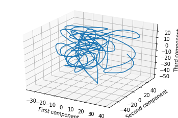
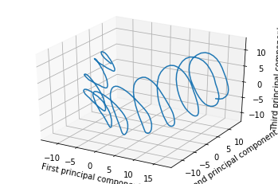
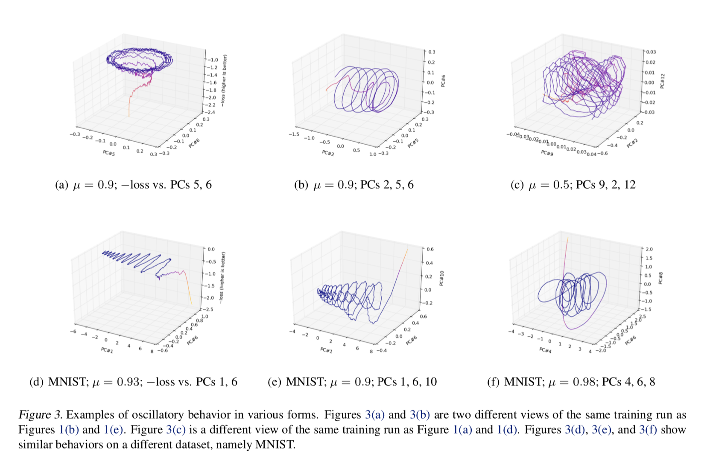
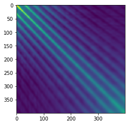
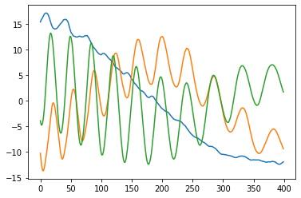

Spaghetti's Shadows are Spirali-Shaped
Thursday, March 26, 2020 · 4 min read
Suppose you took a walk in a high-dimensional vector space, leaving behind breadcrumbs. If you wanted to visualize your route, you might consider projecting the breadcrumbs down to a lower-dimensional space.
One way to do this is to project the breadcrumbs onto three randomly-chosen vectors. Then you might get something like this.

But perhaps a better way to choose the projection is to do PCA on the breadcrumbs as if they were any other point cloud. If you do this, you will find that your walk was extremely loopy and spirally. Here’s an example of the same trajectory, projected down to 3D with PCA (this data is taken from my research work, but even a random walk will show the phenomena I discuss in this post).

Looking at this, you might be concerned that you are walking in circles.
This, for example, was the situation with a 2016 ICML paper, “Visualizing Deep Network Training Trajectories,” that tried to visualize the trajectory of neural network parameters over the course of training by doing exactly what I described: PCA on “breadcrumb” snapshots of the parameters. The author found some strange, hard-to-explain oscillatory behavior; even Lissajous curves.

A similar thing, by the way, happened with a 1994 text on genetics, “The History and Geography of Human Genes” by Cavalli-Sforza et al, which applied PCA to genetic data and found periodic effects.
It turns out however that there’s something deeper going on here, something independent of the individual datasets: these loopy patterns seem to be “just what happens” when you do PCA on such data. A 2018 NeurIPS paper, “PCA of high dimensional random walks with comparison to neural network training” by Antognini and Sohl-Dickstein, explains what’s going on with the neural networks. A 2008 paper, “Interpreting principal component analyses of spatial population genetic variation” by Novembre and Stephens, explains what’s going on with genetics.
Here’s my understanding of the story, reconstructed in part from this Stack Exchange answer.
Recall how PCA works: it tries to come up with orthogonal axes that eat up as much of the variance of the data as possible. One way to think about this is that it tries to come up with a rotation (“orthogonal transformation”) of the data that de-correlates the variance over each axis. In other words, it finds a way to diagonalize the covariance matrix of the dataset.
Okay, in symbols: if ($ X $) is the matrix whose rows are data points and columns are fields, and if your data is “centered” at the origin, then ($ X^TX $) is the covariance matrix whose entries give the covariance between pairs of fields. If ($ E $) is the transformation, then the goal is to select ($ E $) such that ($ (XE)^T(XE) = E^T(X^TX)E $) is a diagonal matrix; that is, ($ E $) diagonalizes ($ X^TX $). Having done that, our projected path will be the (first few columns of) the matrix ($ XE $).
It turns out that ($ XE $) diagonalizes ($ X X^T $). You can see that by just writing it out: ($ (XE)^T XX^T (XE) = E^T (X^TX)^2 E $). Of course an eigenvalue of ($ A $) is also an eigenvalue of ($ A^2 $) and therefore ($ E $) diagonalizes ($ (X^TX)^2 $) as desired. So, it suffices to study the eigenvalues of ($ XX^T $) to learn what the projected path will look like.
Now let’s look carefully at ($ X X^T$), which is the “covariance” for each step rather than for each field. The claim is that this matrix is more-or-less Toeplitz, which means each row is the previous row but shifted by one spot to the right. The reason for this is that adjacent data points are spatially nearby and should have similar correlations. One way to think about this is that the covariances are just dot-products of pairs of points, and the dot product of points 1 and 2 should be about the same as the dot product of points 2 and 3 if your steps are approximately evenly-spaced.
Indeed this seems to be the case for the loopy path I showed above:

If the matrix is truly approximately Toeplitz, then multiplying by it is a convolution by the first row (just look at its structure!). But as we were all taught in signal-processing class, convolution is the same as pointwise multiplication in the Fourier domain. Okay, so what are the “eigenvectors” of pointwise multiplication? One-hot vectors, of course! (Unless your convolution happens to have two frequencies with exactly the same amplitude, in which case you can get some mixing.) Finally, taking the inverse Fourier transform of these one-hot vectors, we recover sinusoidal eigenvectors. Here’s a plot of the top 3 eigenvectors for my running example:

To recap: beware of periodic structures in PCA projections! PCA on high-dimensional trajectories gives loopy projections because their covariance matrices tend to be Toeplitz, yielding sinusoidal eigenvectors. Or, high-dimensional spaghetti casts spirali-shaped shadows!
Here’s a bit of Python code to explore this phenomenon further on a random walk of 200 steps in 1024-dimensional space.
import numpy as np
from matplotlib import pyplot as plt
from sklearn.decomposition import PCA
from sklearn.preprocessing import StandardScaler
import matplotlib.pyplot as plt
from mpl_toolkits.mplot3d import Axes3D
# build a path and center it
position = np.zeros(1024)
X = []
for i in range(200):
position = position + np.random.randn(1024)
X.append(position)
X = np.array(X)
scaler = StandardScaler(copy=False)
scaler.fit(X)
X = scaler.transform(X)
# plot the PCA projection on some components
p = PCA(n_components=5)
p.fit(X)
fig = plt.figure()
ax = fig.add_subplot(111, projection='3d')
ax.plot(
p.transform(X)[:, 0],
p.transform(X)[:, 3],
p.transform(X)[:, 4]
)
# plot the Toeplitz matrix
plt.figure()
plt.imshow(np.dot(X, X.transpose()))
# plot the eigenvalues of the Toeplitz matrix
plt.figure()
plt.plot(np.linalg.eig(np.cov(X))[1][:, :4])